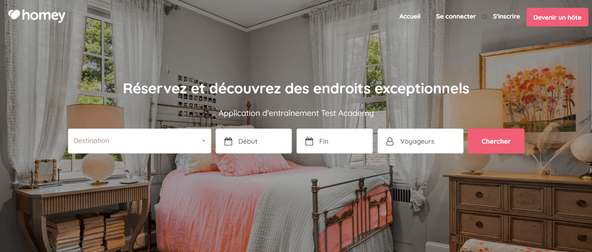
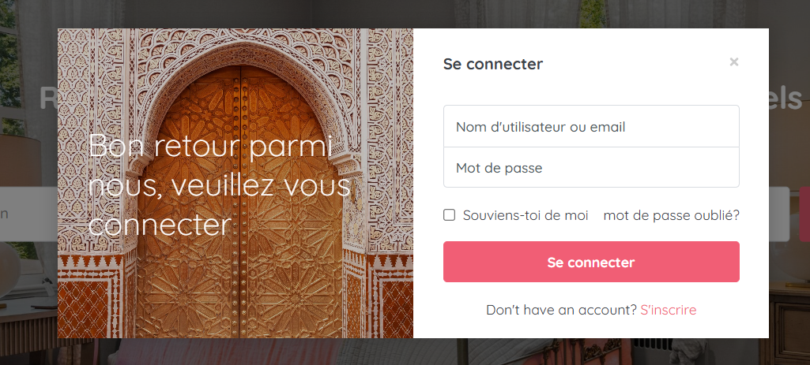

Présentation du projet HOMEY
HOMEY permet aux hôtes de gérer leurs annonces, d’accepter des réservations et de suivre leurs activités simplement. Elle permet aussi aux voyageurs de consulter des annonces, d'effectuer des demandes de réservations et de les payer.
Objectifs fonctionnels :
- 📸 Création & gestion des annonces
- 🗓️ Calendrier de disponibilité & traitement
- 💬 Messagerie intégrée hôtes/voyageurs
- 💳 Paiement sécurisé & annulations
- 📈 Suivi des réservations avec statuts


Contexte de réalisation
- 1 Product Owner
- 9 développeurs
- 2 testeurs + 1 Test Manager
- 1 Scrum Master
Méthodologie Agile
30 User Stories • Méthode Scrum • Sprints de 2 semaines
Bénéfices de la simulation
- Tests statiques, dynamiques manuels et automatisés
- Travail en autonomie ou en binôme (Pair Testing)
- Soutenance avec livrables et cas de test
- Feedback continu des formateurs experts
Stratégie de test
Objectif & Périmètre
Objectif : Valider les fonctionnalités critiques du tunnel de réservation et garantir une expérience utilisateur fluide sur les parcours principaux.
- Recherche & filtres d'annonces
- Tunnel de réservation (Booking)
- Gestion des statuts (Hôte/Voyageur)
- Tests de charge (Performance)
- Sécurité infrastructure profonde
Approche
Combinaison hybride de tests manuels pour valider l'UX/UI et de tests automatisés pour sécuriser la non-régression sur le "Happy Path".
Typologies de tests réalisés
Validation des critères d'acceptation (US).
Scripts Robot Framework pour la non-régression.
Mon périmètre de test (Sprint Planning)
Le périmètre spécifique qui m'a été confié concernait le flux complet de réservation :
- Faire une demande de réservation
- Traiter une demande de réservation (Hôte)
Résumé des User Stories
Voyageur : Envoyer une demande de réservation afin de bénéficier d’un séjour dans un logement saisonnier.
Hôte : Accepter ou refuser une demande de réservation afin de planifier les séjours.
Critères d’acceptation (Gherkin)
| Fonctionnalité / Scénario | Description des Critères |
|---|---|
| FAIRE UNE DEMANDE DE RÉSERVATION | |
| Voyageur connecté |
✔️ ETANT DONNE un Voyageur connecté ✔️ QUAND il fait une demande de réservation ✔️ ALORS le système crée une nouvelle réservation... |
| Visiteur non connecté |
✔️ ETANT DONNE un Visiteur non connecté ✔️ QUAND il tente une réservation ✔️ ALORS le système ne donne pas suite à la demande |
| TRAITER UNE DEMANDE (TRANSITIONS DE STATUTS) | |
| Confirmation par l’hôte |
✔️ ETANT DONNE un hôte connecté et une réservation NOUVEAU ✔️ QUAND il confirme la demande ✔️ ALORS le statut devient ATTENTE DE PAIEMENT |
| Annulation par le voyageur |
✔️ ETANT DONNE un voyageur connecté et une réservation NOUVEAU ✔️ QUAND il annule la demande ✔️ ALORS le statut devient ANNULÉ |
| Refus par l’hôte |
✔️ ETANT DONNE un hôte connecté et une réservation NOUVEAU ✔️ QUAND il refuse la demande ✔️ ALORS le statut devient REFUSÉ |
| Paiement voyageur |
✔️ ETANT DONNE un voyageur connecté et une réservation ATTENTE DE PAIEMENT ✔️ QUAND il procède au paiement ✔️ ALORS le statut devient RÉSERVÉ |
Conception & Exécution
Exemples de cas de test
| ID | Titre du cas de test | Priorité | Statut Final |
|---|---|---|---|
| TC-RES-01 | Demande de réservation avec dates valides (Voyageur) | P0 - Critique | PASS |
| TC-RES-05 | Acceptation d'une réservation par l'hôte | P0 - Critique | PASS |
| TC-PAY-02 | Paiement par carte bancaire (Simulation Stripe) | P1 - Haute | FAIL |
Gestion des anomalies
- Création : Rédaction de tickets de bugs détaillés (Etapes de reproduction, logs, screenshots).
- Sévérité : Qualification précise de l'impact métier pour aider à la priorisation.
Automatisation des tests
Pourquoi automatiser ?
L'automatisation a été mise en place pour répondre à deux enjeux majeurs :
- Sécuriser les parcours critiques : Garantir que les fonctionnalités vitales (Réservation / Paiement) fonctionnent.
- Réduire les régressions : Rejouer rapidement les scénarios critiques après correctifs et changements UI.
Scénarios automatisés réalisés
Approche technique
- Robot Framework + SeleniumLibrary
- Scripts structurés en Keywords réutilisables
- Gestion centralisée des variables (URL, navigateur, locators)
- Locators XPath / CSS + attentes explicites pour fiabiliser l’exécution
- Approche orientée “parcours métier critiques”
Valeur apportée
- Sécurisation du tunnel de réservation via re-run rapide après correctifs
- Détection plus rapide des régressions UI sur les actions sensibles
- Validation automatisée d’un contrôle négatif (réservation sans login)
- Gains de temps sur les campagnes de re-tests et montée en fiabilité
Résultats clés
Tests Fonctionnels
Anomalies détectées
Automatisation
Scripts robustes (Robot Framework) garantissant la non-régression.
Activité Jira & Xray
Livrables produits
Retrouvez ici l'ensemble des documents produits durant le cycle de test du projet HOMEY.
| Type de livrable | Fichiers & Liens d'accès |
|---|---|
| Cas de tests |
Story 1 : Faire une demande de réservation
Story 2 : Traiter une demande de réservation |
| Résultats (Manuels) |
Rapport d'exécution Story 1 Rapport d'exécution Story 2 |
| Scripts Automatisés |
Story 1 (Connecté) Story 1 (Non connecté) Story 2 |
| Rapports Automation |
Robot Log : Story 1 Robot Log : Story 2 |
| Rapports de défauts | |
| Rapport Final de Test | Consulter le Rapport de Synthèse Final |
| Support Soutenance | PPTX Présentation |
Retours d'expérience
Ce que ce projet m’a appris
J’ai constaté sur le terrain que les tests exploratoires révèlent des anomalies que les scénarios scriptés ne couvrent pas toujours, notamment sur les parcours réels et les cas limites.
Les sessions exploratoires ont mis en évidence des incohérences UX et des comportements inattendus.
Manuel pour l’UX/UI, automatisation pour sécuriser la non-régression sur les parcours critiques.
Focus sur paiement, transitions de statuts et scénarios à fort impact métier.
Défis relevés
- Comprendre rapidement les flux métier et la logique des statuts.
- Identifier les cas limites sur le tunnel de réservation.
- Maintenir une couverture pertinente malgré un périmètre large.
- Automatiser des scénarios fiables dans un environnement de test contraint.
Comment j’ai résolu ces défis
Découpage des User Stories + critères Gherkin, puis conception des tests par objectifs.
Priorisation sur paiement, transitions critiques et données sensibles, pour maximiser l’impact métier couvert.
Scripts robustes sur les parcours critiques afin de sécuriser la non-régression et gagner du temps sur les re-runs.